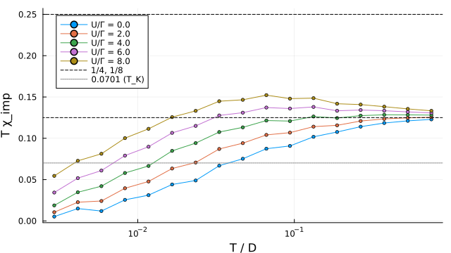
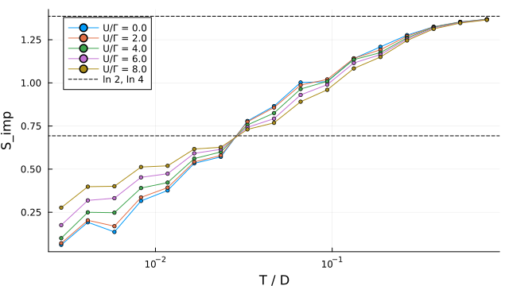

Symmetric Anderson model ($\varepsilon_d = -U/2$, flat band of half-width $D = 1$, $\Gamma = 0.03$) solved by WilsonNRG.thermodynamics: Wilson's logarithmic discretization with $\Lambda = 2$, U(1)×U(1) symmetry, an energy cut of 6 and 18 chain sites, one run per $U/\Gamma$. Impurity quantities are the two-run difference (full minus bath), as in Krishna-murthy, Wilkins & Wilson (1980).
Scope. One discretization, one truncation, one chain length. The lowest temperature reached is set by the chain length, so the largest $U/\Gamma$ may not be screened within it. Nothing here is z-averaged, and nothing is converged in $\Lambda$ or in the cut.

⤓ download
⤓ download$T_K$ is read where $T\chi_{\rm imp}$ falls through 0.0701 (Wilson's definition) and compared with Haldane's $T_K = \sqrt{U\Gamma/2}\,e^{-\pi U/8\Gamma + \pi\Gamma/2U}$, which holds for $U \gg \Gamma$. The two definitions differ by an O(1) factor, so what is asked is whether the ratio stays constant as $T_K$ falls. It does not: it drifts from 0.96 at $U/\Gamma = 4$ to 1.25 at 8. Two causes are open and neither is tested here — the $\Lambda = 2$ renormalisation of $\Gamma$, and reading $T_K$ near the end of an 18-site chain at the largest $U/\Gamma$. At $U/\Gamma = 2$ the model is mixed-valent and Haldane's form does not apply.
| U/Γ | T_K (Wilson) | T_K (Haldane) | ratio | Tχ at lowest T | S at lowest T |
|---|---|---|---|---|---|
| 0.0 | — | — | — | 0.00524 | 0.0612 |
| 2.0 | 0.0228 | 0.03 | 0.76 | 0.0105 | 0.0705 |
| 4.0 | 0.0125 | 0.0131 | 0.96 | 0.0188 | 0.0997 |
| 6.0 | 0.00698 | 0.0064 | 1.09 | 0.0343 | 0.175 |
| 8.0 | 0.00394 | 0.00316 | 1.25 | 0.0545 | 0.277 |
{kind=link}
{kind=link}